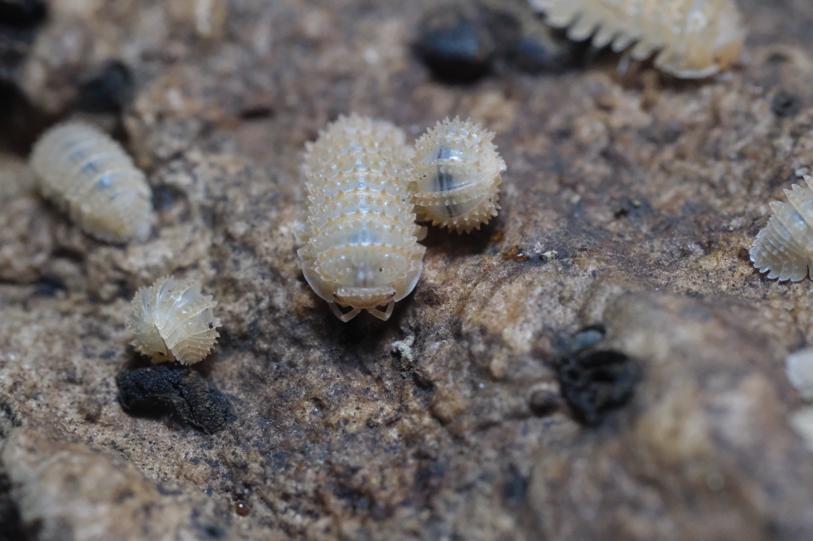

Home
Isopods
Expos
Contact
Care
About
Contact us here
for the most up to date availability!
Armadillidium species
A. badium 'Castledaccia'
A. espanyoli 'Marbleized'
A. gestroi 'High Yellow Spot'
A. klugii 'Montenegro'
A. maculatum 'Zebra'
A. scaberrimum 'Sandstone'
A. vulgare 'Magic Potion'
Cubaris species
C. murina 'Glacier'
C. murina 'Papaya'
C. sp 'Cappuccino'
C. sp 'Citrus'
C. sp 'Japanese Red Edge'
C. sp 'Panda King'
C. sp 'Rubber Ducky'
C. sp 'Silver Ghost'
Porcellio species
P. laevis 'Dairy Cow'
P. scaber 'Dalmatian'
P. scaber 'Lava'
P. scaber 'Orange Dalmatian'
P. scaber 'Orin's Calico'
P. scaber 'Giant Orange'
P. sevilla
Porcellionides species
Porcellionides sp. 'Powder Orange'
Misc species

C. muricatum 'Pineapple'
C. convexus 'Ukraine Pied'
Troglogillo sp 'Soil'
Dwarf species
T. tomentosa 'Dwarf White'
V. parvus 'Wild Type'